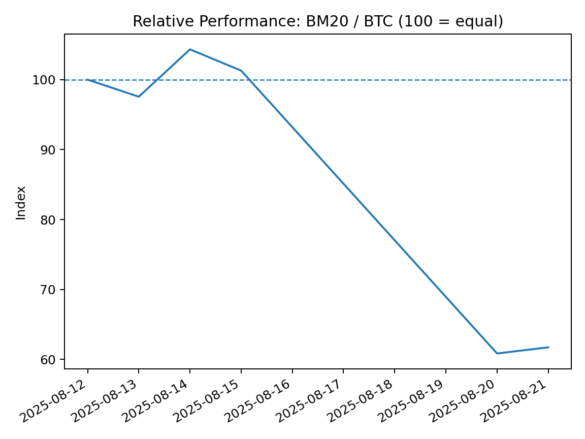
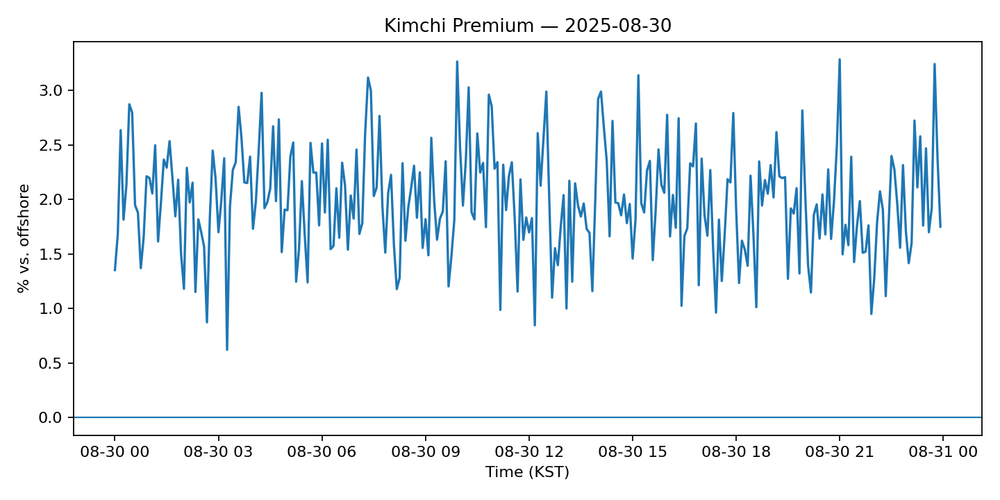
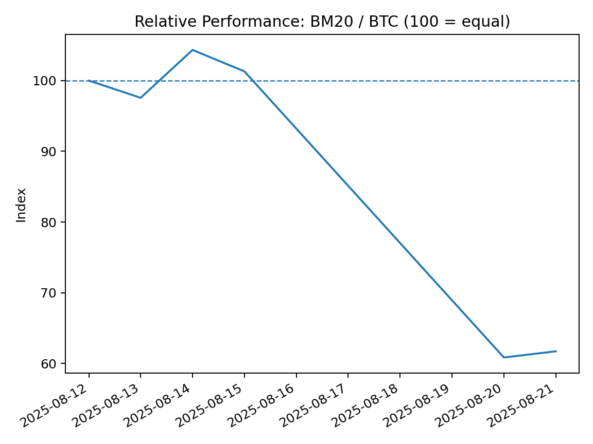
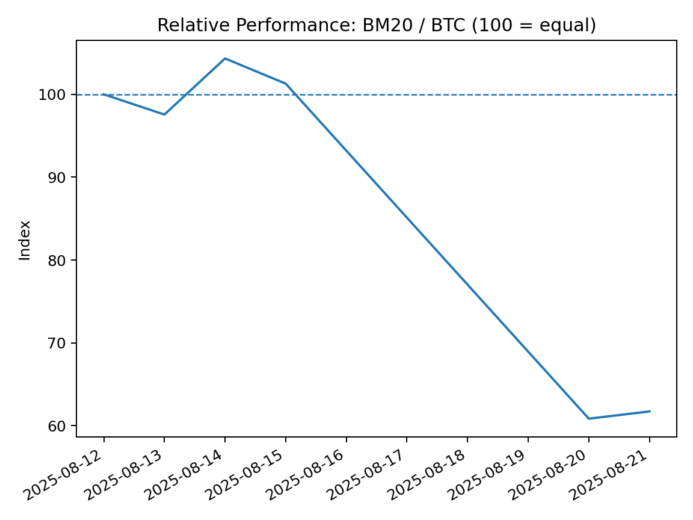
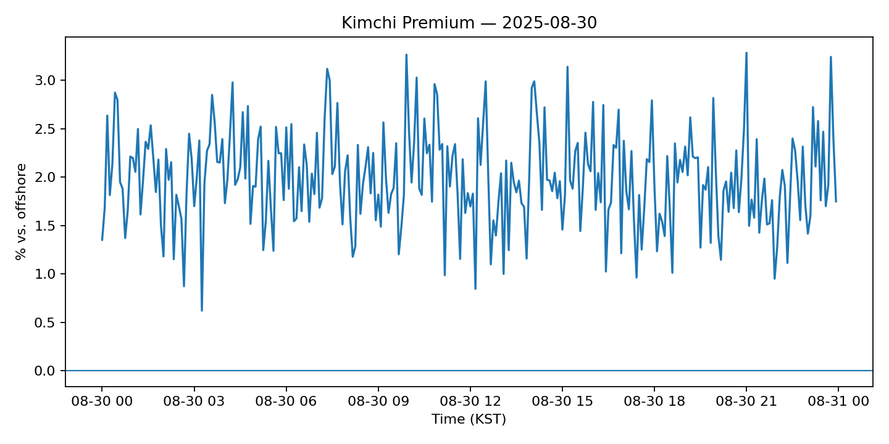
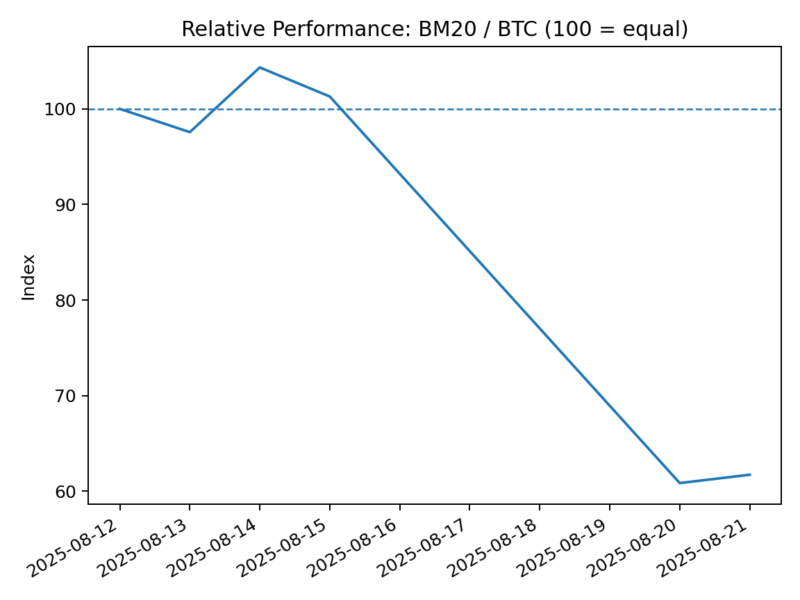
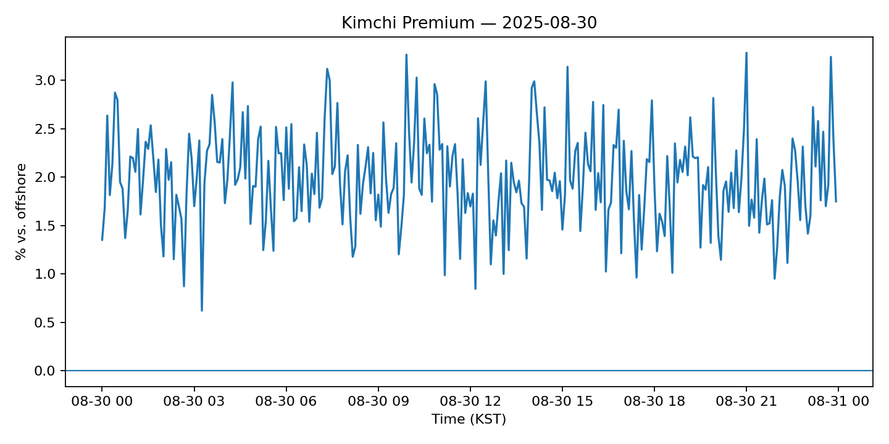
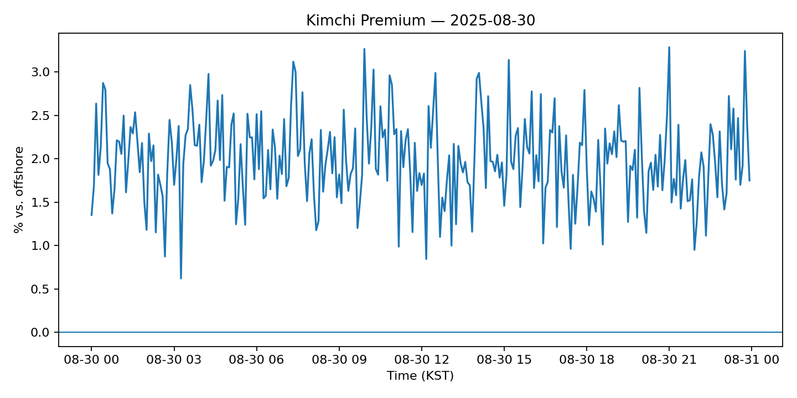
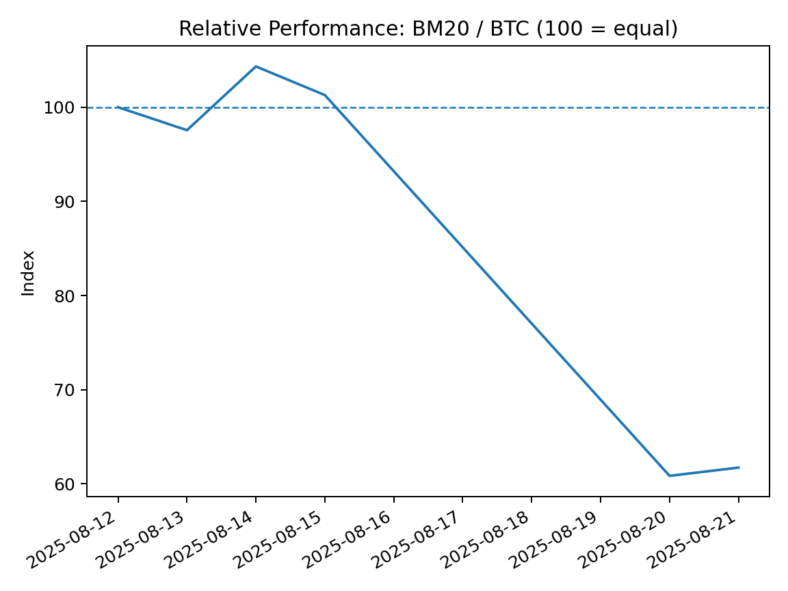
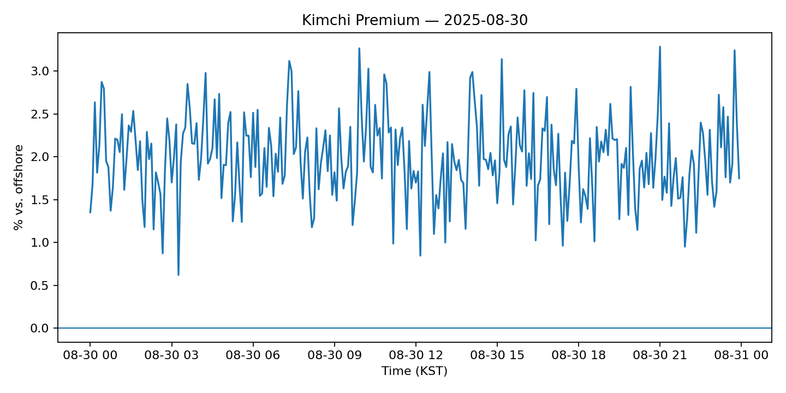

BM20 데일리 리포트
기준일: 2025-09-02


김치 프리미엄
데이터 없음
펀딩비(8h)
데이터 없음
코인별 퍼포먼스 (상승 TOP 10)
데이터 없음
코인별 퍼포먼스 (하락 TOP 10)
데이터 없음
기여도 MTD (상위 10)
데이터 없음
기여도 QTD (상위 10)
데이터 없음
기여도 YTD (상위 10)
데이터 없음
 

 
